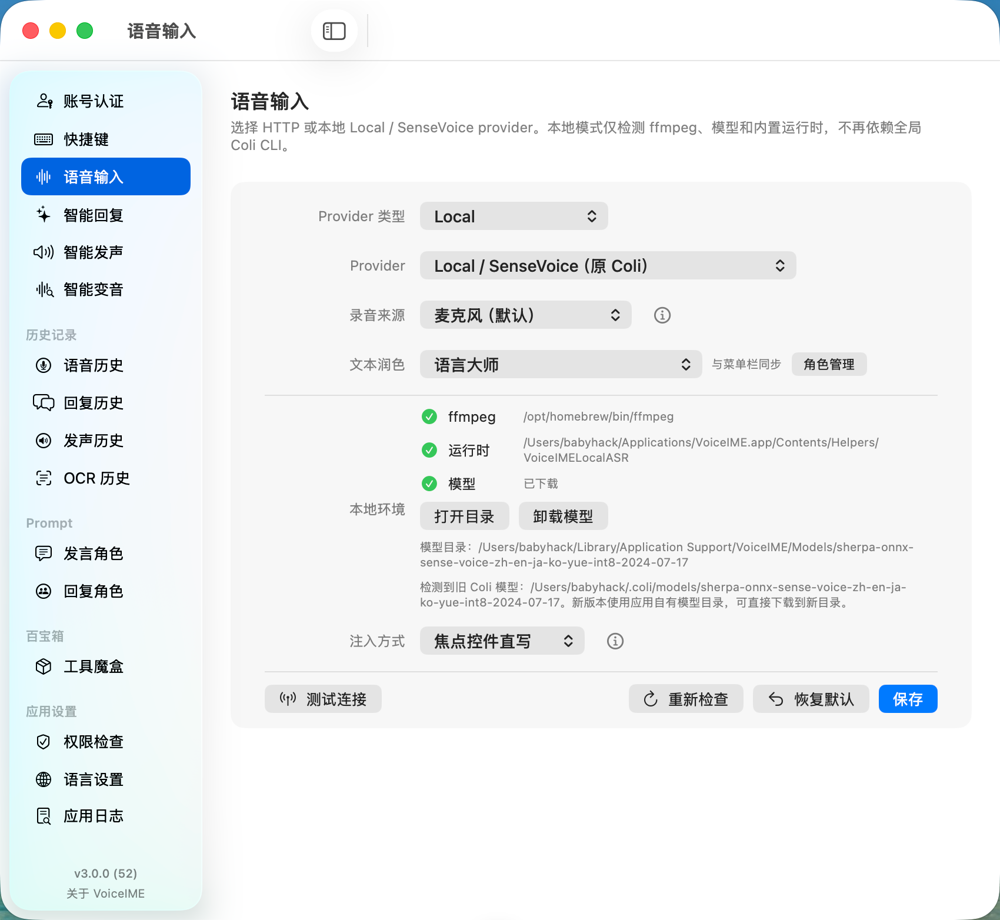
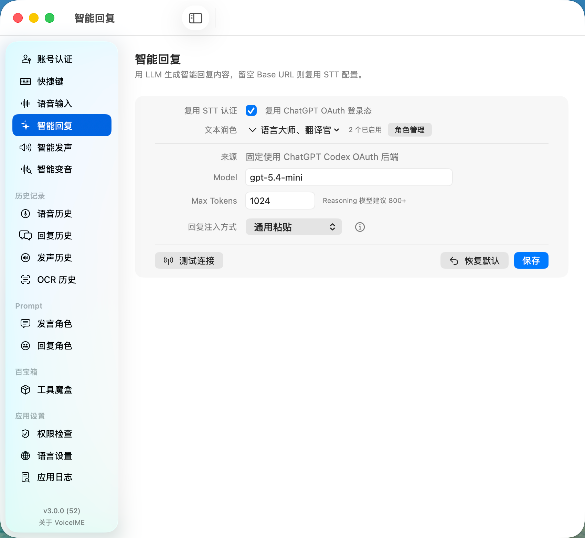
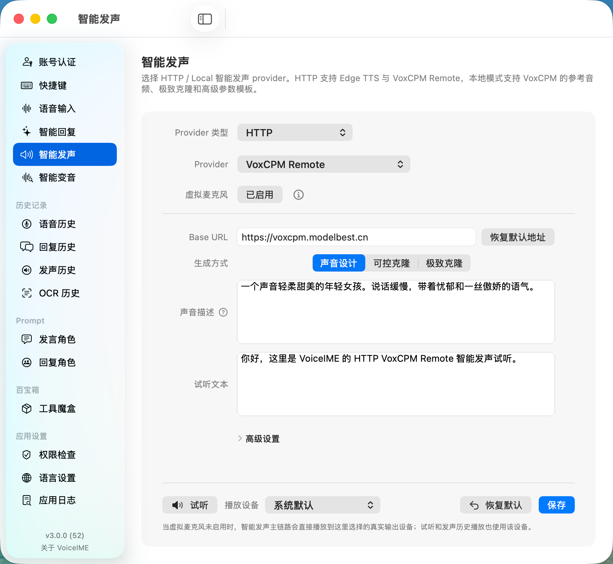
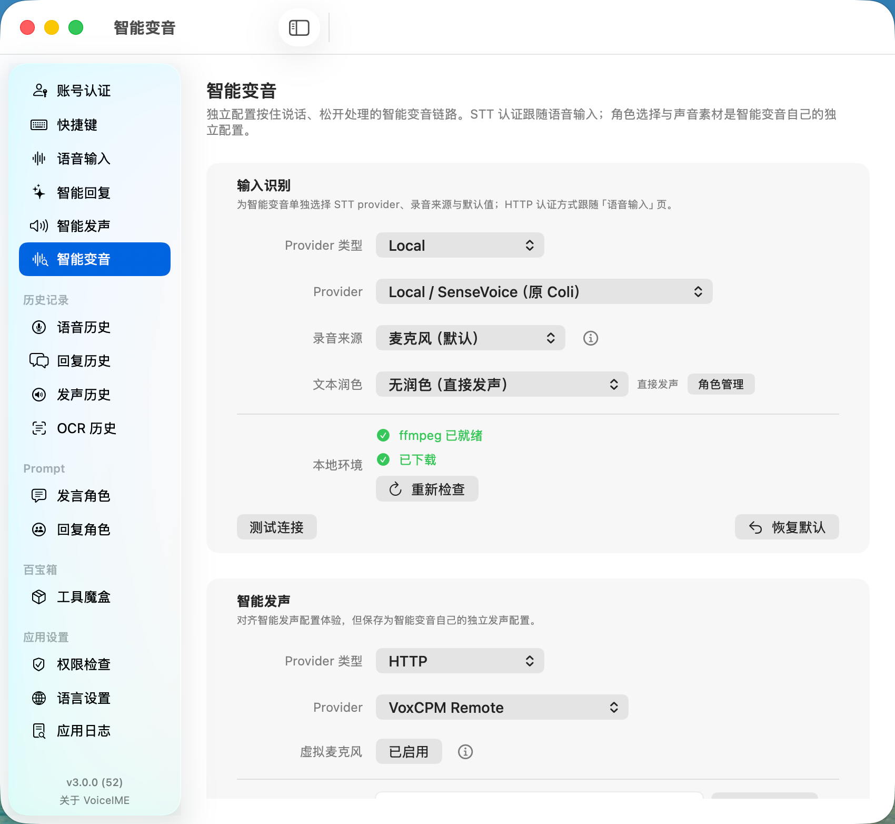
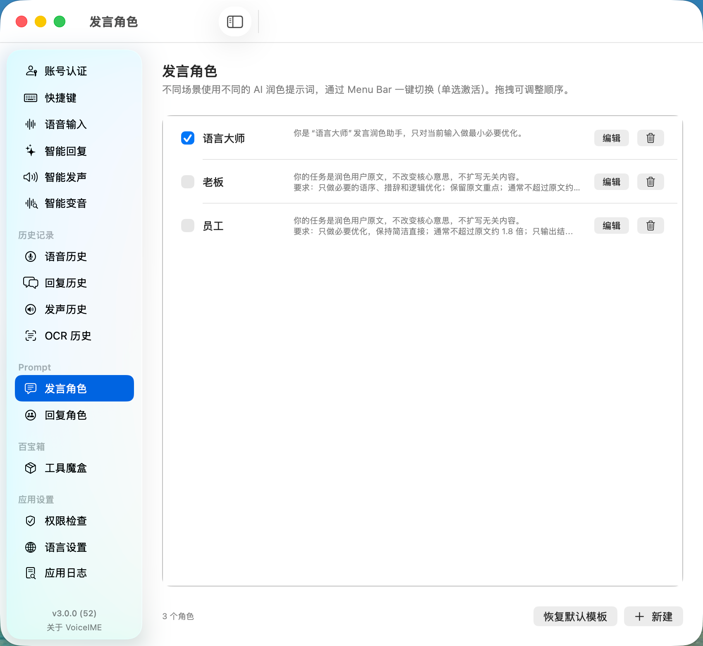
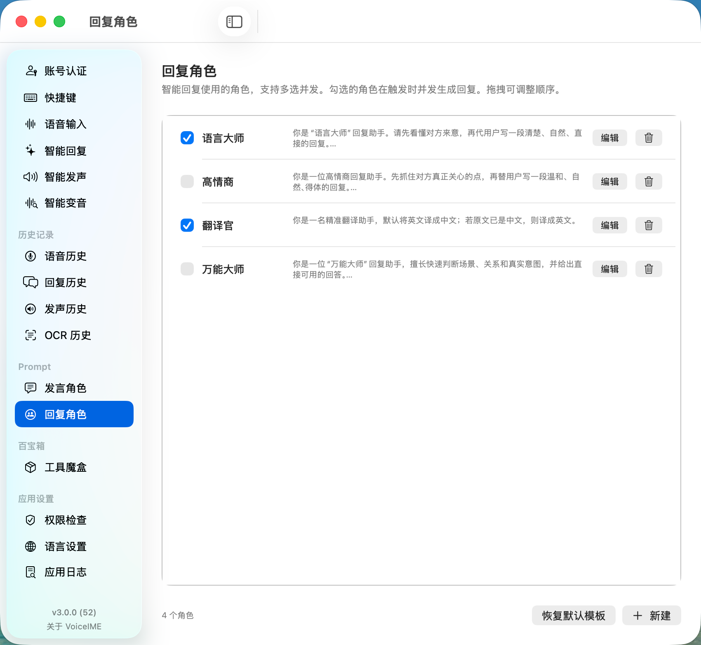

VoiceIME for macOS
面向高效表达的智能语音输入法。
VoiceIME 以菜单栏与全局快捷键为入口，整合语音输入、智能回复、智能发声、智能 OCR 与智能变音能力，帮助用户在 macOS 上完成输入、理解、生成与表达。产品目前处于正式发布准备阶段，开源计划将通过作者 GitHub 主页同步。

智能回复
理解上下文，快速生成可用回复
智能 OCR
识别文字与二维码，衔接后续处理
Product Preview
产品界面轮转预览。
以下预览展示 VoiceIME 当前核心设置页与角色系统。界面结构贴近真实使用路径，便于下载前快速了解产品形态。





Capabilities
覆盖输入、回复、识别、发声与变音的完整能力。
VoiceIME 将高频桌面表达任务集中到同一套原生工作流中，配置清晰，触发迅速，结果可直接进入当前应用。
语音输入法
通过快捷键启动录音，自动完成语音识别、文本润色与内容注入。支持 HTTP provider 与本地 SenseVoice 方案。
智能回复
基于选中文本或当前输入生成自然回复。支持多角色并发、翻译、润色与结构化输出。
智能发声
将文本转换为语音内容，支持 Edge TTS、VoxCPM Remote、本地发声链路、试听与播放设备选择。
智能 OCR
识别截图中的文字与二维码信息，将桌面内容快速转为可复制、可处理、可继续生成的文本。
智能变音
为变音场景独立配置 STT、角色与发声 provider，按住说话后输出目标声音，适配直播、会议与内容创作。
Native Workflow
为 macOS 桌面工作流设计。
VoiceIME 将菜单栏、快捷键、设置中心、历史记录与角色系统连接为稳定的产品体验。用户可以快速触发，也可以长期维护个性化配置。
菜单栏常驻
核心动作保持可达，适合高频输入与即时表达。
角色驱动
发言角色与回复角色分工明确，场景切换更高效。
本地与在线并行
按能力选择 Local 或 HTTP provider，适配不同部署偏好。
Download
立即体验 VoiceIME。
发布包提供 ZIP 与 DMG 两种安装路径。下载 ZIP 后，可运行 install.sh，也可打开其中的 VoiceIME.dmg 完成图形化安装。
1下载并解压发布包
2运行
./install.sh 或打开 DMG3按照系统提示完成权限授权
FAQ
常见问题
以下内容帮助用户快速完成安装前评估。
VoiceIME 适合哪些场景？
适合聊天沟通、邮件处理、文档整理、截图取字、翻译润色、朗读、变音输出与辅助表达等桌面场景。
VoiceIME 是否开源？
VoiceIME 目前处于开源准备阶段。开源信息、发布动态与后续说明将通过作者 GitHub 主页同步。
支持哪些接入方式？
VoiceIME 支持在线服务与本地运行时，可按功能选择 HTTP provider 或 Local provider。
产品预览对应真实功能界面吗？
官网预览基于当前产品功能结构与真实页面语义组织，展示下载后的主要配置路径。
首次安装后需要完成哪些配置？
启动应用后，根据系统提示授权录音、辅助功能、屏幕录制等必要权限，即可使用核心能力。